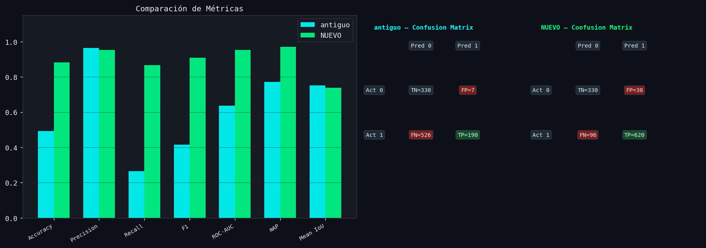
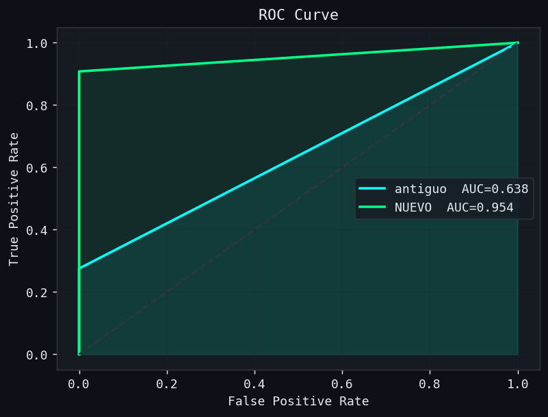
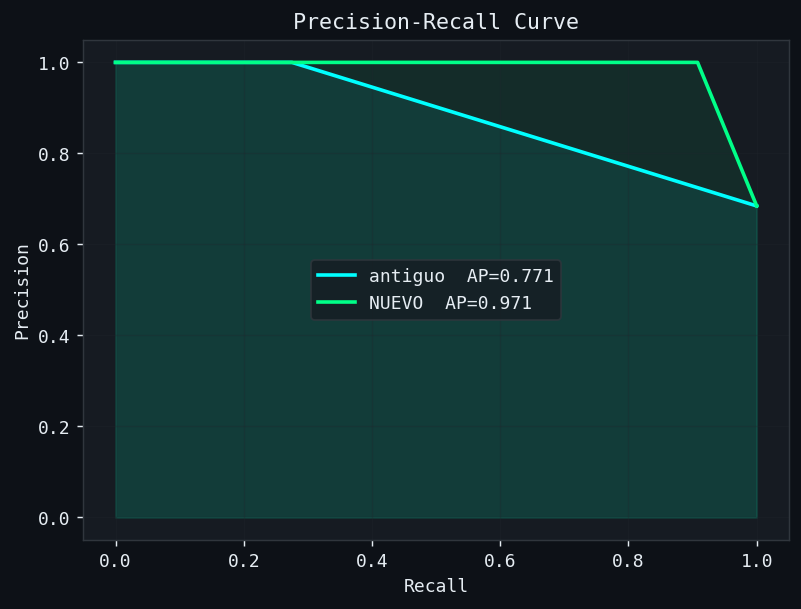
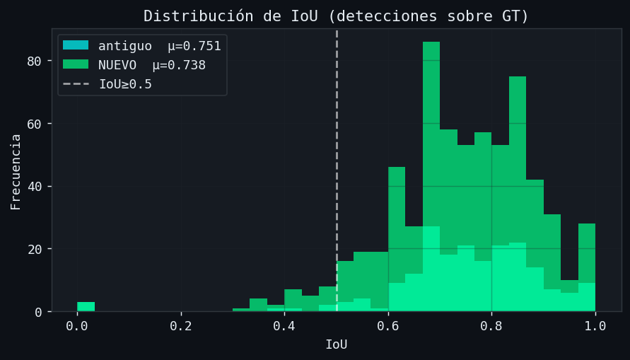
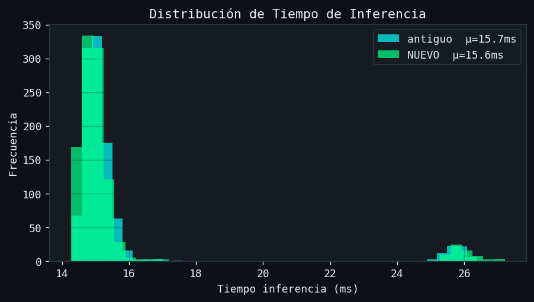

antiguo vs NUEVO · Ball Padel Detection · IoU threshold = 0.5 · 1046 imágenes evaluadas
⚠ ROC-AUC = N/A cuando el dataset de validación tiene solo una clase (e.g., todas las imágenes tienen pelota). Es un problema del split, no del modelo.
| Metric | antiguo (cyan) | NUEVO (green) |
|---|---|---|
| Accuracy | 49.38% — | 88.29% 🏆 |
| Precision | 96.45% 🏆 | 95.38% — |
| Recall | 26.54% — | 86.59% 🏆 |
| F1-Score | 41.62% — | 90.78% 🏆 |
| ROC-AUC | 63.76% — | 95.39% 🏆 |
| Avg Precision (mAP) | 77.13% — | 97.09% 🏆 |
| Mean IoU | 75.14% 🏆 | 73.81% — |
| Mean Confidence | 0.568 — | 0.676 🏆 |
| Inf. Time (ms) | 15.7 ms — | 15.6 ms 🏆 |
| Pred 0 | Pred 1 | |
|---|---|---|
| Act 0 | TN 330 | FP 7 |
| Act 1 | FN 526 | TP 190 |
| Pred 0 | Pred 1 | |
|---|---|---|
| Act 0 | TN 330 | FP 30 |
| Act 1 | FN 96 | TP 620 |

Comparación general de métricas y matrices de confusión

ROC Curve – area bajo la curva

Precision-Recall Curve – Average Precision

Distribución de IoU sobre detecciones válidas

Distribución del tiempo de inferencia por imagen